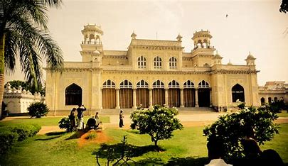
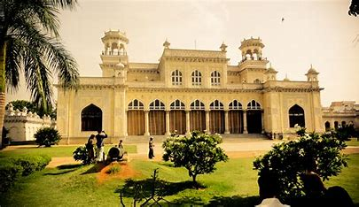
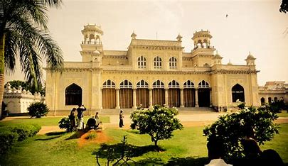

 

Chowmahalla Palace is a popular tourist destination located in Hyderabad, Telangana, India. The palace was the official residence of the Nizams of Hyderabad during their rule in the 18th century. The name 'Chowmahalla' refers to four palaces that once made up the complex. Today, only one palace remains standing, but it is a stunning example of the architectural and cultural heritage of the Nizams.
The Chowmahalla Palace is a unique blend of Persian and Indian architectural styles, and its elegant halls, courtyards, and gardens are a testament to the opulence and grandeur of the Nizams' lifestyle. The palace complex is spread over 12 acres and consists of two courtyards, the northern courtyard and the southern courtyard. The northern courtyard houses the Khilwat Mubarak, which was the durbar hall of the Nizams, and the Clock Tower.
The palace also houses a museum that showcases the rich history and culture of Hyderabad and the Nizams. The museum has a vast collection of artifacts, including vintage cars, weapons, and costumes worn by the Nizams.
Chowmahalla Palace is not only a popular tourist destination but also a significant historical landmark of Hyderabad. It is a symbol of the city's rich cultural and architectural heritage and serves as a reminder of the grandeur and opulence of the Nizams' era.
Located at Motigalli in Hyderabad, the Chowmahalla Palace unravels the best opportunity for you to experience the grandeur and glory of the rulers of the past. Built between 1857 and 1869, this palace was completed during the rulershi p of the fifth Nizam i.e. Afza-ud-Daulah, Asaf Jah V. However, according to many historians, it is correct to credit the palace to Nizam Salabat Jang. Spread across 45 acres, the Chowmahalla Palace is often said to be modeled after the Shah Palace of Tehran in Iran. The word ‘chow’ translates into four and ‘mahalla’ into the palace in Urdu. Being one of the most popular historical places to visit in Hyderabad, Chowmahalla Palace is known for its splendid architecture which attracts thousands of visitors every year from different parts of the country. The palace was opened for the public in 2005.
Besides exuding Nawabi charm, this palace reflects different architectural styles such as Persian, European, Indo-Saracenic, and Rajasthani. The Chowmahalla Palace in Hyderabad also won the UNESCO Asia Pacific Merit Award in 2010 for conserving the cultural heritage of the region. Today the palace is spread across 12 acres and will leave you in awe with its exquisite architecture. As you visit Chowmahalla palace, you will literally feel like walking into the old times. The architecture of this edifice adorns itself with delicate artworks including domes, windows, arches, and so on. You will find an array of elegant embellishments in the complex as well. Some of the places that you must visit during your trip to the Chowmahalla Palace include Clock Tower, Roshan Bangla, the Council Hall, and so on. Many corporates today hold exquisite dinner parties with the palace in the background. Mir Barkat Ali Khan Mukarram Jah, who serves as the present titular Nizam of Hyderabad, owns the palace.
 ..The Nizam would…ascend the marble steps of the takth and take his seat near the front of the dais on the yellow masned, unadorned, in consonance with the austere nature of the founder Nizam-ul Mulk..
There are different ways to reach the Chowmahalla Palace. Depending on where you are coming from, you can avail one of these ways to reach the Chowmahalla Palace in Hyderabad.
By Road: If you already in Hyderabad, the Chowmhalla Palace is roughly 5.5 km away from the city center. With a private cab, it would take you approximately 20-25 minutes to reach the palace.
By MMTS (Local Train Service ): Transport System (MMTS) is one of the most effective ways to visit the different places around Hyderabad. The nearest MMTS station is the Nampally/Hyderabad MMTS station from where you can reach the Chowmahalla Palace in 15 minutes.
By Air: The nearest airport in the city is the Rajiv Gandhi International Airport. If you are arriving in the city by flight, you can take a cab to reach the Chowmahalla Palace. The distance between the airport and the palace is approximately 20 km which can be easily covered in 45 minutes.
The Chowmahalla Palace has a quite few parts that you shouldn’t miss. Some of these are Bara Imam, Khilwat Mubarak, Clock Tower, Council Hall, and so on. In this section, you will get to know about these parts in detail.
Bara Imam: Used as the administrative wing of the palace, Bara Imam today stands adorned with different rooms and a long corridor. From the corridor, you can see the eastern part of the central fountain. You must observe the Mughal domes at this part. Adorned with Persian architecture, this part comes embellished with ornamental stucco work which further adds to the beauty of the Khilwat Mubarak. Shishe Alat located opposite to the Bara Imam is the part where you can see the guest rooms that were earlier used to accommodate special guests.
Khilwat Mubarak: Located at the center of the Chowmahalla Palace, Khilwat Mubarak used to be the seat of the rulers during the Asaf Jahi dynasty. The Durbar Hall here is adorned with spectacular pillars and is home to the Royal Seat which is also known as the Takht-e-Nishan. Both court and important ceremonies used to be organized here. Don’t miss the recently added Belgian crystal chandeliers here.
Clock Tower: Located right at the entrance, the Clock Tower welcomes you to the Chowmahalla Palace. The Khilwat clock here above the main gate is believed to have been ticking for more than 250 years now. The mechanical clock is taken care of by an expert every week.
Council Hall: Being one of the most important buildings in the Chowmahalla Palace, the Council Hall is known for being home to historic manuscripts as well as rare books. The collection here boasts of having vintage cars, furniture, crockery, and royal buggies in it. They also host temporary exhibitions here at times.
Roshan Bangla: to be named after Roshan Begum, this exquisite structure used to be home to the 6th Nizam.
Southern Courtyard: Southern Courtyard in the Chowmahalla Palace has been designed to reflect the neo-classical style. Besides being the oldest part of the palace, this courtyard is home to four palaces i.e. Aftab Mahal, Afzal Mahal, Mahtab Mahal, and Tahniyat Mahal.
There are a couple of things that you shouldn’t really miss during your visit to Chowmahalla Place. Here a few of them:
1.The Hypnotic Sight: Don’t miss the hypnotic sight that the yellow and white motifs of the palace create in contrast with the beautiful lawn here.
2.Huge Water Fountain: Huge water fountain is the first thing in the palace that will give you an idea of the architectural excellence of the palace. Don’t miss the pillars that exhibit artistic craftsmanship.
3.Intricate Carvings: The walls and ceilings of the Chowmahalla Palace are adorned with intricate carvings along with glass chandeliers of different designs.
4.Various Galleries: The galleries in the palace adorn themselves with different items such as clothes, furniture, coins, crockery, and so on. Also, don’t miss the display of weapons here.
5.Quran Section: The Quran section in the palace unravels the best opportunity for you to get a glimpse of different kinds of handwritten Quran restored using the Japanese technique.
6.Afzal Mahal: While no visitors are allowed into the Afzal Mahal, you will be able to see through the glass windows and a door here. The hall here unravels the best opportunity for you to experience the luxury Nizam lifestyle.
Chowmahalla Palace remains open from 10 AM to 5 PM from Saturday to Thursday. The palace remains closed on Friday. Here is the schedule of entry fees for Chowmahalla Palace:
While there a quite a few hotels located within close proximity to the Chowmahalla Palace in Hyderabad, here is a hand-picked list of places to stay.
FabHotel Deccan Heritage, Abids: Located roughly 4.5 km away from the Chowmahalla Palace in Hyderabad, FabHotel Decan Heritage Abids is an excellent choice for those looking for decent accommodation near the palace. Offering modern amenities such as flat-screen cable tv, shower, private bathrooms, minibar, and so on, this hotel comes with an on-site restaurant Zaika where you can get lip-smacking Indian and Chinese delicacies as well.
Holiday Inn Express, Hyderabad Banjara Hills: Located 9.5 km away from the Chowmahalla Palace, the Holiday Inn Express Hyderabad Banjara Hills unravels the best opportunity to experience luxury. All the rooms here come adorned with amenities such as coffee maker, television, minibar, refrigerator, multi-functional media unit, and so on. Besides having a fitness center, the hotel also has the Express Cafe which serves food and drinks round the clock.
Park Continental Hotel: Located 8 km away from the Chowmahalla Palace, the Park Continental Hotel is known for combining modernity and luxury in a subtle manner. All the rooms here are not only air-conditioned but also come with a bunch of amenities such as wifi, room service, private bathroom, desk, flat-screen tv, and so on. You can also enjoy a continental breakfast every morning at this property.
The area surrounding the Chowmahalla Palace is home to quite a few popular attractions which you must not miss during your stay in Hyderabad. Here are some of them:
Charminar: 2.2. Km away from the Chowmahalla Palace, Charminar is one of the top heritage spots to see in Hyderabad. Lying on the banks of the Musi river, this palace is believed to have been built by the fifth Sultan Mohammed Quli Qutb Shahi to commemorate the end of a deadly plague. This landmark is quite popular for its 56-meter high columns that reflect different directions of the road here.
Location: Rd, Char Kaman, Ghansi Bazaar, Hyderabad, Telangana 500002, India
Mecca Masjid: Located 350 meters away from the Chowmahalla Palace, Mecca Masjid is known for being its intricate designs. Commissioned by Muhammad Quli Qutub Shah, this mosque was completed in 1694. The foundation stone of the edifice was brought from Mecca which is why this mosque is known as Makkah Masjid. With a capacity of 20,000, this is also one of the largest mosques in the country.
Location: Rd, Charminar, Ghansi Bazaar, Hyderabad, Telangana 500002, India
Salar Jung Museum: Located 2.2 km away from the Chowmahalla Palace, the Salar Jung Museum is known for being one of the most popular places to see in Hyderabad. Being home to the most extensive one-person collection, this museum is the third-largest in the country. Don’t miss the 19th-century musical clock made by the Cooke and Kelvey of England here.
Location: Salar Jung Rd, near Minar Function Hall, Darulshifa, Hyderabad, Telangana 500002, India
Rating: | 4.7/5 stars